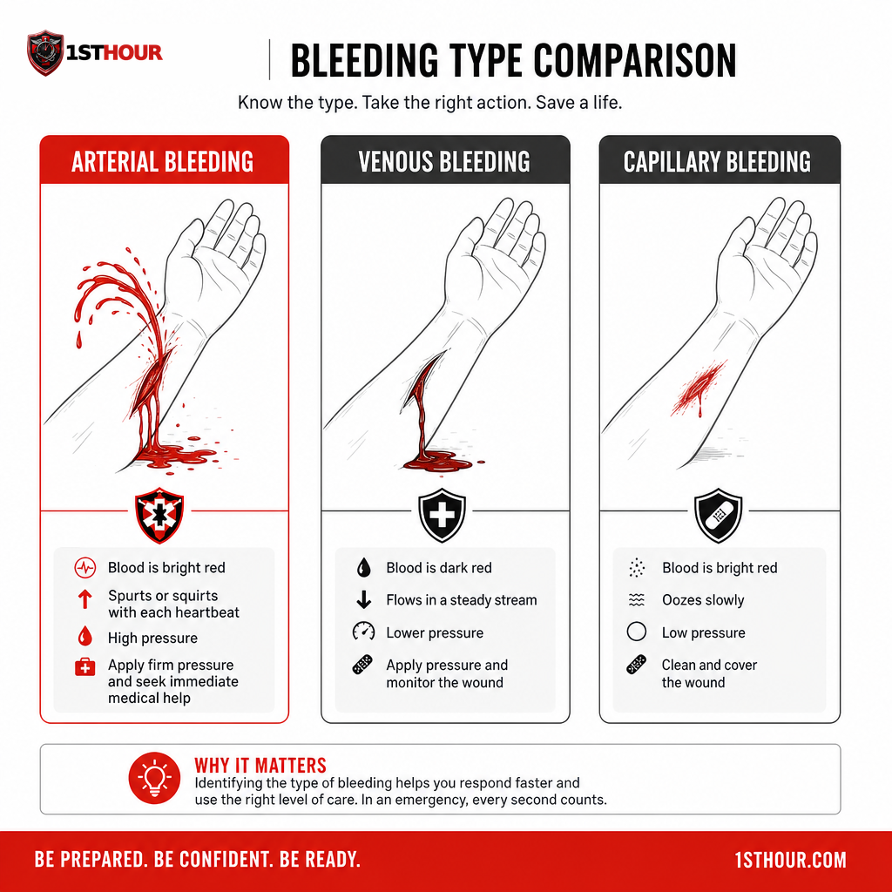
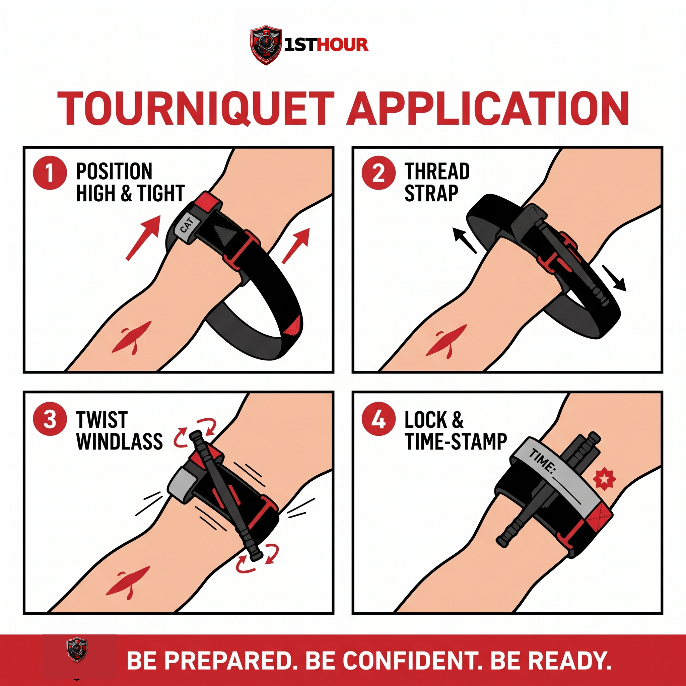
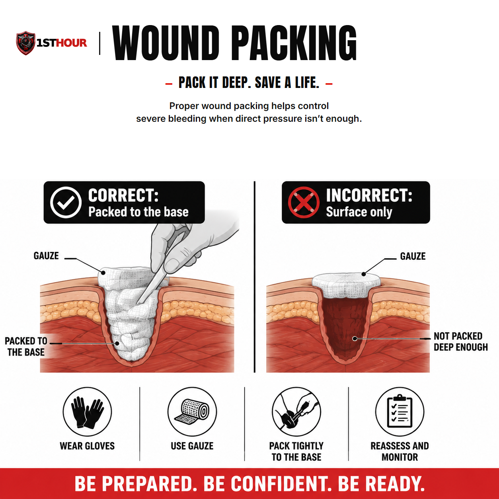

Severe Bleeding & Hemorrhage Control
What to do in the first sixty seconds after someone starts bleeding badly — and everything after that, until help arrives.
1. Why the First Hour Matters
A person with a severe arterial bleed can lose enough blood to become critical in as little as three to five minutes. Emergency medical services in most parts of the country take between seven and fourteen minutes to arrive after a 911 call is placed — longer in rural areas, longer still if roads are blocked, weather is bad, or every unit in the area is already on a call. That gap between "bleeding starts" and "professional help arrives" is the window this protocol exists for.
The uncomfortable truth that emergency medicine has settled on over the last two decades — driven largely by lessons from military trauma care and mass-casualty events — is this: uncontrolled bleeding is the single most preventable cause of death from injury. Not because it's rare, but because the fix is often simple, fast, and doesn't require a medical license. Direct pressure, a properly applied tourniquet, and a packed wound stop more deaths than any other first-aid intervention that exists.
What this guide will not do is turn you into a paramedic. What it will do is walk you through the exact sequence a first responder is trained to run through in the first sixty seconds of a bleeding emergency — the same sequence taught in the national "Stop the Bleed" campaign — so that if you're ever the only person standing between someone and a fatal bleed, you know what to do without hesitating.
2. Recognizing Severe Bleeding
Not all bleeding needs a tourniquet. Most cuts and scrapes stop with a bandage and a few minutes of pressure. This protocol is for bleeding that will not stop on its own and will kill the person if left unaddressed. Learning to tell the difference quickly is the first skill.
| Type | What it looks like | Danger level |
|---|---|---|
| Arterial | Bright red, spurting or pulsing in time with the heartbeat, can shoot several feet | Life-threatening within minutes — highest priority |
| Venous | Dark red, steady flow, pools rather than spurts | Can still be life-threatening if the wound is large or bleeding is prolonged |
| Capillary | Slow ooze, like a typical scrape | Rarely dangerous alone; direct pressure is almost always enough |
In practice, you often won't have time — or the visibility — to classify the bleed precisely, and that's fine. Use this simpler rule instead, taken directly from Stop the Bleed training:

3. The Immediate Response Protocol
This is the sequence. Read it now, before you ever need it, and it will come back to you under pressure. Every step matters, but step one — direct pressure — is the one thing you should be doing within the first five seconds, before you've even finished thinking through the rest.
- Ensure the scene is safe. Before you approach, make sure you're not about to become a second casualty — check for traffic, fire, electrical hazards, unstable structures, or an ongoing threat. You cannot help anyone if you're also injured.
- Call or have someone call 911 immediately. Don't wait to see how bad it is. If you're alone, put the phone on speaker and start treatment while you talk to the dispatcher.
- Apply firm, direct pressure to the wound. Use your bare hands if nothing else is available (don't delay treatment to search for gloves), or non-latex gloves from your kit if they're within reach, then grab the thickest clean cloth, gauze, or dressing you can find. Press down hard and don't let up to "check" — checking releases the pressure and restarts the clock.
- If pressure alone isn't controlling life-threatening bleeding from a limb, apply a tourniquet. Don't wait for the wound to "get worse" first. See Section 4 for exact placement and technique.
- If the bleeding is from the torso, neck, or a spot a tourniquet can't reach (a "junctional" wound like the groin or armpit), pack the wound with gauze and hold continuous pressure. See Section 5.
- Keep the person warm and as still as possible. Losing body heat accelerates blood loss and shock. A jacket, blanket, or even a car seat cover under and over them helps.
- Monitor breathing and level of consciousness until help arrives. If they stop breathing and you're trained in CPR, begin it. If not, follow the 911 dispatcher's instructions — they can talk you through it in real time.
4. Applying a Tourniquet
A tourniquet is not a last resort — it's a first-line tool for severe limb bleeding that direct pressure isn't controlling. Modern trauma medicine (and two decades of battlefield data) has thoroughly debunked the old myth that tourniquets cause routine limb loss when used correctly and removed by medical staff within a few hours. A properly applied tourniquet buys time. An improperly applied — or not applied — tourniquet costs a life.
If you have a commercial tourniquet (like the one in your 1st Hour kit):
- Place it high and tight. Position the tourniquet 2–3 inches above the wound, but never directly over a joint. If you're unsure exactly where the bleeding is coming from, or the wound is on the limb close to where it meets the torso (upper thigh, upper arm), place it as high on the limb as possible — "high and tight."
- Pull the strap tight through the buckle. Feed the band around the limb and pull it as tight as you can before securing it through the buckle mechanism.
- Twist the windlass rod until bleeding stops completely. This will be uncomfortably tight — that's correct. A tourniquet tight enough to only "reduce" bleeding is too loose.
- Lock the windlass in place using the clip or hook built into the device, then secure the strap over it.
- Write down the time it was applied. Use tape, marker on skin, or your phone — EMS needs to know exactly how long the tourniquet has been on.
- Do not loosen or remove it once applied, even if the bleeding appears to stop. Leave that decision to EMS or a physician.
If you don't have a commercial tourniquet:
An improvised tourniquet is far better than none, but it's meaningfully less reliable — the goal is still complete cessation of bleeding, not "better than nothing."
- Choose a band at least 1.5–2 inches wide — a belt, a folded bandana, a strip of thick fabric. Thin materials like paracord or wire can cut into skin and tissue.
- Wrap it twice around the limb, 2–3 inches above the wound, and tie a single overhand knot.
- Place a rigid object — a stick, a pen, a sturdy tool handle — on top of the knot, then tie a second knot over it to hold it in place.
- Twist the rigid object like a windlass until the bleeding fully stops.
- Secure the rod so it can't unwind — tie the loose ends around it or tape it down.
- Note the time the same way you would with a commercial device.

5. Wound Packing & Hemostatic Gauze
A tourniquet only works on a limb, and only above the wound. For bleeding from the torso, neck, shoulder, groin, or anywhere else a tourniquet can't be applied, the answer is wound packing combined with direct pressure. This looks aggressive the first time you do it — you are meant to physically push material into an open wound — but it is the correct, trained technique for controlling deep bleeding.
Where a Tourniquet Works — and Where It Doesn't
Quick rule: if you can wrap a band all the way around the limb above the wound, reach for the tourniquet. Everywhere else on this map, go straight to packing.
- Expose the wound. Cut or move clothing out of the way so you can see exactly where the bleeding is coming from.
- Pack the wound tightly with gauze. If you have hemostatic gauze (gauze treated with a clotting agent, standard in a 1st Hour kit), use it first. Push the gauze directly into the wound cavity, packing it in firmly — not just laying it over the top.
- Keep packing until the cavity is full. For a deep wound, this may take an entire roll of gauze. Use your fingers to push material as deep into the wound as the injury allows.
- Hold firm, continuous pressure directly over the packed wound with the palm of your hand for at least three minutes without letting up, even if your hand cramps.
- Once bleeding is controlled, secure the packing with a pressure bandage wrapped snugly over the top, without removing the packed gauze.

6. Pressure Dressings & Improvised Materials
Once bleeding is under control — by direct pressure, a tourniquet, or wound packing — a pressure dressing keeps it that way while you wait for EMS, freeing your hands and stabilizing the injured person for transport.
- Commercial pressure bandage: Wrap firmly and evenly, working from below the wound upward, tucking the end securely. It should be tight enough to maintain pressure but not so tight it cuts off circulation to the rest of the limb — check that fingers or toes below the dressing stay warm and pink.
- Improvised options: A folded T-shirt held in place with a belt, a scarf wrapped snugly, duct tape over a folded cloth pad. None of these are ideal, but a firm improvised dressing beats an unsecured hand pressed to a wound if you need both hands free — for example, to call 911 or assist a second casualty.
- Never remove a dressing to "check" the wound. If blood soaks through, add more material and pressure on top of the existing dressing rather than taking it off — removing it disturbs any clot that's started to form.
7. Recognizing & Managing Shock
Shock is what happens when the body can't deliver enough blood and oxygen to its organs — and severe blood loss is one of the most common causes. It can develop within minutes of a major bleed and is dangerous in its own right, independent of the wound itself.
Signs of shock:
- Pale, cool, or clammy skin
- Rapid, weak pulse
- Rapid, shallow breathing
- Confusion, anxiety, or restlessness
- Nausea or vomiting
- Extreme thirst
- Progressive weakness or loss of consciousness
What to do:
- Keep the bleeding controlled — shock will not improve while blood loss continues, so the interventions above remain the priority.
- Lay the person flat if there's no suspected spinal injury. If there's also no suspected leg injury or breathing difficulty, you may gently raise the legs about 6–12 inches — current first aid guidance notes this can help blood return to vital organs, but the effect is brief and not required, so don't delay or skip warmth and bleeding control to do it. Stop if it causes pain, shortness of breath, or is impractical given the injury location.
- Keep them warm. Cover with a blanket, jacket, or emergency blanket. Losing body heat worsens shock significantly.
- Do not give food or water, even if they ask for it — it can cause vomiting and complicates anesthesia if surgery is needed.
- Keep talking to them. Reassurance and staying conscious/responsive matters; note any change in alertness to report to EMS.

8. Special Situations
Embedded objects
If something is still lodged in the wound — glass, metal, wood — do not remove it. Stabilize it in place with bulky padding built up around it, and bandage over the padding without applying direct pressure to the object itself. Removing it can trigger sudden, severe bleeding the object had been partially controlling.
Junctional wounds (groin, armpit, neck, shoulder)
A standard tourniquet can't be applied here because there's no limb to encircle above the wound. Wound packing plus firm, sustained direct pressure — held longer and harder than you'd expect necessary — is the correct approach. A junctional tourniquet, if your kit includes one, is designed specifically for this and should be used per its included instructions.
Multiple casualties
If you're the only capable responder and more than one person is bleeding severely, triage by severity: treat the person with the most immediately life-threatening bleed first (typically the one spurting or pumping blood), apply a tourniquet or packing to stop that bleed as fast as possible, then move to the next. A tourniquet, once applied, largely takes care of itself — which is part of why it's prioritized over ongoing manual pressure when you have more than one casualty to manage.
Bleeding in a child
The same core techniques apply — direct pressure, packing, tourniquet if needed — but a child's total blood volume is much smaller, so a bleed that looks "moderate" by adult standards can become critical faster. Don't wait to escalate to a tourniquet if pressure alone isn't controlling it quickly.
9. Climate & Demographic Notes
The core response to severe bleeding doesn't change by geography — but two environmental factors change how fast complications develop, and they're worth knowing before you need them.
- Cold climates: Blood loss and cold exposure compound each other. A drop in body temperature interferes with the body's own clotting ability, meaning bleeding can be harder to control the colder the person gets. In northern states and winter conditions, warming the person (blankets, moving them out of wind/snow contact, insulating them from cold ground) is not just comfort — it's part of bleeding control.
- Hot climates: Heat accelerates dehydration, which lowers blood volume and pushes a person into shock faster after blood loss. In southern and desert states, get the person into shade, loosen restrictive clothing above the injury, and treat aggressively for shock even with a smaller volume of blood lost than you might expect elsewhere.
- Rural response-time gap: EMS transport times in rural counties frequently run well beyond the national average. If you live outside a metro area, treat the interventions in this guide as things you may need to sustain for longer than fifteen minutes — check and reinforce dressings, keep monitoring for shock, and don't assume help is "just a few minutes out."
10. When to Call 911
Stay on the line if you can. Dispatchers are trained to walk you through bleeding control in real time and will tell you exactly what information responding units need — your location, the number of people injured, and what you've already done. If bleeding has been fully controlled and the person is stable by the time EMS is close, tell the dispatcher; it may change how the response is routed, but it does not mean you should stop calling or stop monitoring.
Do not attempt to drive a severely bleeding person to a hospital yourself unless you have been explicitly told to by a 911 dispatcher because EMS cannot reach you in time. A moving vehicle makes it far harder to maintain pressure, monitor for shock, or respond if the person loses consciousness.
11. Aftercare & Follow-Up
Once EMS has taken over, your job as a first responder is done — but a few things are worth knowing for afterward.
- Tell EMS everything you did and when — tourniquet application time especially. This directly affects the injured person's treatment.
- Restock your kit immediately. Gauze, dressings, and a tourniquet used in a real emergency need to be replaced before the kit is trusted again.
- It's normal to feel shaken afterward. Responding to a severe bleeding emergency is intense even when it goes well. Debrief with someone, and don't hesitate to talk to a professional if the experience stays with you.
- If you used your own bare hands for direct pressure and were exposed to blood, wash thoroughly and mention it to EMS or a doctor — bloodborne exposure is a standard, low-drama thing to flag, not something to worry over silently.
12. Essential Items Checklist
Everything in this protocol assumes you have certain supplies within reach when the first sixty seconds start. Run through this list before you ever need it — restock immediately after any real use, per Section 11.
- Commercial tourniquet (CAT-style) — Section 4. The single most important item on this list.
- Hemostatic gauze — Section 5. Clotting-agent gauze for deep wound packing.
- Plain roller gauze / trauma dressing — Sections 5–6. Backup packing material and dressing padding.
- Pressure/elastic wrap bandage — Section 6. Secures packing and holds pressure hands-free.
- Non-latex gloves — worn before contact with any blood, per Section 3's immediate response steps.
- Trauma shears — Section 5. Cuts clothing away to expose the wound quickly.
- Permanent marker or time-tape — Section 4. Records the exact tourniquet application time for EMS.
- Emergency/space blanket — Sections 3 & 7. Warmth slows the progression of shock.
13. Your State: Good Samaritan Protections
Every U.S. state has some form of Good Samaritan law — legal protection for people who provide reasonable emergency assistance in good faith, without expectation of payment. The exact wording, what's covered, and any exceptions vary by state, and laws change over time. What follows is a general overview for the twelve most populous states, not legal advice — see the full disclaimer below.
California
Good Samaritan protection extends broadly to emergency care given in good faith, including non-medical bystanders. Coastal wildfire-adjacent regions also mean bleeding response sometimes overlaps with evacuation conditions — treat and transport decisions may be affected by road closures.
Texas
Good Samaritan protection applies to good-faith emergency care without expectation of compensation. Hot, humid summers raise shock and dehydration risk after blood loss — see the heat-climate note in Section 9.
Florida
Good Samaritan protection covers emergency assistance rendered in good faith. Hurricane-season power and EMS disruptions can extend response times well beyond normal averages in affected areas.
New York
Good Samaritan protection applies to good-faith emergency aid. Cold-season response in upstate and rural areas should factor in the cold-climate clotting note in Section 9.
Pennsylvania
Good Samaritan protection covers emergency care provided in good faith and without compensation. Rural counties outside Philadelphia and Pittsburgh can see longer EMS transport times.
Illinois
Good Samaritan protection applies broadly to good-faith emergency assistance. Winters are a factor for the cold-climate bleeding/shock interaction described in Section 9.
Ohio
Good Samaritan protection covers those who render emergency care in good faith. A largely rural geography outside major metros means response-time planning matters here.
Georgia
Good Samaritan protection applies to good-faith emergency aid. Hot, humid summers make the heat/shock note in Section 9 especially relevant.
North Carolina
Good Samaritan protection covers good-faith emergency assistance. Both coastal storm exposure and mountain-region rural response times are relevant depending on where in the state you are.
Michigan
Good Samaritan protection applies to those providing emergency care in good faith. Cold-weather response is a real factor for much of the year — see Section 9.
New Jersey
Good Samaritan protection covers good-faith emergency assistance without compensation. Dense population generally means shorter average EMS response times than the national average.
Virginia
Good Samaritan protection applies to good-faith emergency care. Response times vary sharply between the Northern Virginia/D.C. corridor and the state's more rural southern and western regions.
14. Medical Disclaimer
This guide is for general educational purposes only and does not constitute medical advice, diagnosis, or treatment. It is not a substitute for professional medical care, emergency medical services, or a certified first aid, CPR, or Stop the Bleed course, which we strongly recommend taking in person.
In any real emergency, call 911 (or your local emergency number) immediately. Nothing in this guide should delay that call.
The Good Samaritan law information in Section 13 is general information, not legal advice. Laws vary by state, change over time, and may have exceptions not covered here. Consult a licensed attorney in your state for guidance on your specific situation.
1st Hour and its parent company make no warranty, express or implied, regarding outcomes from applying the information in this guide, and disclaim liability for actions taken based on its contents to the fullest extent permitted by law.
Editor's note: this edition reflects content as of August 24, 2026. 1st Hour periodically revises protocol guides as best practices evolve — visit 1sthourprotocols.com/severe-bleeding for the current edition and to re-download the latest PDF.